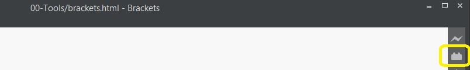

Brackets has extensions (or "plugins") that help it be able to do just about anything. I suggest installing the following
To install an extension:
Emmet is a tool that helps you write html that much faster.
The basic feature is: type a word, hit tab, and that word is "tag-ified". For advanced features, check out their website
Beautify formats your code to keep it pretty. This has lots of benefits for us, namely making it easier to see mistakes and making your code easier to read.
Brackets-Git integrates git with brackets, giving you a nice GUI to keep track of your repository with.
"Fold" parts of code you don't need to look at right now, letting you see the big picture. Just click the gray arrows on the left to fold/unfold your code.
Lets you change both the opening and closes tags of an element in one fell swoop.